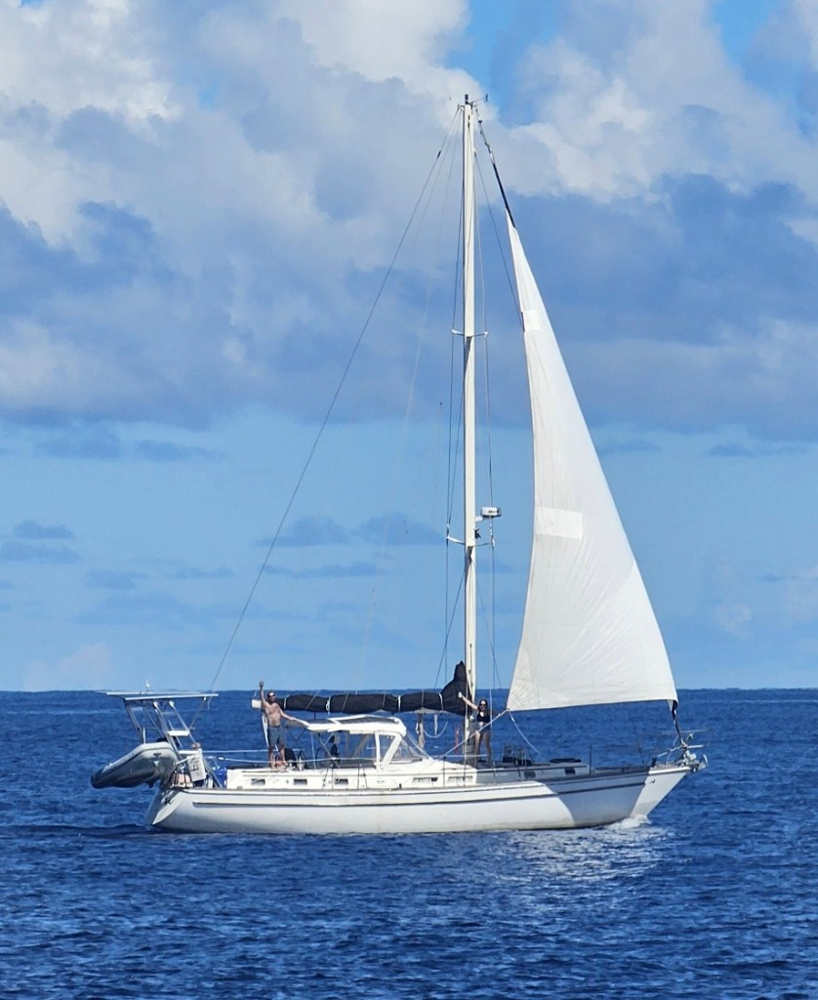

I bought Sharlie in Solomons, MD in May 2022. After a couple of refits and trips along the ICW, I left for the Bahamas and Dominican Republic. Now that I'm officially on sabbatical, I'm sailing her full-time through the rest of the Caribbean.